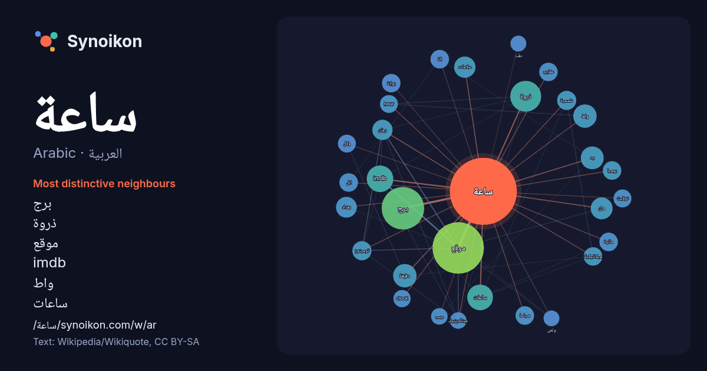

العربية · Arabic · word of the day list
ساعة
“clock” · The words found around it in 1226 instances from Arabic Wikipedia, Wikiquote.

Most distinctive neighbours
- برج 53×
- ذروة 37×
- موقع 31×
- imdb 31×
- واط 23×
- ساعات 20×
- روتن 19×
- مان 17×
- توميتوز 17×
- عقارب 15×
- صباحا 15×
- hour 15×
- يوميا 14×
- clock 14×
- علامات 14×
- ميكانيكية 13×
- ابل 13×
- شمسية 13×
- ميتاكريتيك 13×
- بوابة 12×
× = how many times more often than in general Arabic Wikipedia text.
Most frequent neighbours
- موقع 116
- برج 79
- فيلم 46
- ذروة 42
- عالم 35
- واحدة 34
- imdb 31
- ساعات 29
- عمل 28
- نصف 27
- دقيقة 24
- واط 24
- يد 23
- مان 21
- علامات 20
- بغداد 19
- روتن 18
- عربية 17
- مدينة 17
- مسلسل 17
In context
- ساعة (تعمية) ساعة (آلة): الة تحدد الوقت.. ساعة يد: ساعة شخصية.. ساعة (وحدة)، وحدة زمنية. الساعة من أسماء يوم القيامة، أو يوم الحساب أو يوم الساعة. زهرة Wikipedia snippets · ساعة (توضيح)
- بين غروب الشمس وشروقها) إلى 12 ساعة. في العصور ما قبل الكلاسيكية، عندما استخدمت آلات الساعات، كان يجب تغيير فترة الساعة على سبيل المثال بواسطة تغيير طول Wikipedia snippets · ساعة (وحدة)
- ساعة مكة تعديل - تعديل مصدري - تعديل ويكي بيانات ساعة مكة هي ساعة واقعة فوق مجمع أبراج البيت ضمن فندق فيرمونت بمدينة مكة المكرمة الواقعة غرب السعودية، Wikipedia snippets · ساعة مكة
- قناة 24 ساعة هي قناة تلفزيونية إخبارية إسبانية تابعة للتلفيزيون الإسباني، أُطلِقت القناة في 15 سبتمبر 1997 تحت اسم (Canal 24 Horas). https://web.archive Wikipedia snippets · قناة 24 ساعة
- على موقع واي باك مشين ساعة ونص على موقع IMDb (الإنجليزية) ساعة ونص على موقع نتفليكس (الإنجليزية) ساعة ونص على موقع الدهليز ساعة ونص على موقع قاعدة بيانات Wikipedia snippets · ساعة ونص (فلم)
- تعد ساعة مكة أعلى ساعة في العالم حيث تقع على قمة برج الساعة. ولزيادة مجال رؤية الساعة فقد تم بناء الساعة بأربعة أوجه موزعة على واجهات برج الساعة الأربعة Wikipedia snippets · أبراج الساعة
- ممكن يقصد بها: ساعة الذروة (سلسلة أفلام): سلسلة أفلام. ساعة الذروة (فيلم) ساعة الذروة 2 (فيلم) ساعة الذروة 3 (فيلم) لعبة حاسوب سيم سيتي 4 رش أور SimCity Wikipedia snippets · ساعة الذروة (توضيح)
- الوقت بصيغة ال12 ساعة هو ميثاق أو عرف زمني يقسم اليوم ذو الـ24 ساعة إلى دورتين، دورة ما قبل منتصف اليوم (الإنجليزية: AM) ودورة ما بعد منتصف اليوم (الإنجليزية: Wikipedia snippets · نظام 12 ساعة
More Arabic words
- أغنية
- إله
- تاريخ
- جبل
- جرس
- جزيرة
- جسر
- حديقة
- حصان
- حقيقة
- حياة
- خبز
- خريطة
- خريف
- ذهب
- زمن
- شاي
- شتاء
- صحة
- صحراء
- صمت
- صيف
- طبيعة
- طريق
- طعام
- ظل
- عائلة
- عاصفة
- عسل
- علم
- عمل
- غابة
- فن
- قطار
- قطة
- قلب
- قوة
- كلب
- لغة
- ماء
- مال
- مدينة
- مرآة
- مطر
- ملح
- مناخ
- موت
- نجم
- والدة
Precomputed on 2026-10-09 with default settings (±5 words, medium corpus). The interactive map can refresh it with live data.